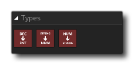

GameMaker Studio 2 tiene varios tipos de datos diferentes, como enteros, cadenas, punteros, etc., y algunos de ellos se pueden convertir a otros. Esta sección del manual muestra las diferentes acciones disponibles para tratar y convertir diferentes tipos de datos.
Nota: se puede encontrar más información sobre los diferentes tipos de datos aquí.
La biblioteca de tipos tiene las siguientes acciones:
 | Decimal a Entero |
 | Cadena al número |
| Número a cadena |